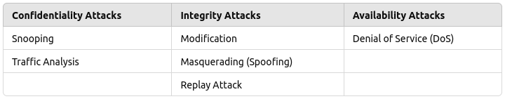

Introduction to Cryptography
Cryptography is the science of securing communication by transforming readable data (plainli) into an unreadable form (cipherli). The goal is to ensure that only authorized users can access or understand the information, protecting it from unauthorized access. Cryptography plays a key role in securing data in our everyday lives, from email communication to online banking, ensuring that private information remains confidential and secure.
Security Goals
- Before understanding cryptographic attacks, it’s important to know the goals of security in cryptography. These goals define what cryptographic methods aim to achieve when protecting data. Without these goals, any effort to protect information becomes ineffective.
The three main security goals are confidentiality, integrity, and availability.
- Confidentiality:
- The primary goal of confidentiality is to prevent unauthorized access to data. Only those who have the right permissions should be able to view the information.
- Example: Your password is encrypted when you log in to your email, ensuring that only you and the system can access it.
- Integrity:
- Integrity ensures that the data remains unchanged and accurate. Any unauthorized modifications to data should be detectable, and only authorized users should be able to make changes.
- Example: When sending important documents via email, the integrity goal ensures the document isn’t altered during transmission.
- Availability:
- Availability ensures that authorized users can access the data or services when needed. Attacks that limit access to resources can disrupt business operations and communication.
- Example: During a denial-of-service (DoS) attack, users may be unable to access a website because the server is overwhelmed with traffic.
Classification of Cryptographic Attacks
Cryptographic attacks refer to attempts by attackers to compromise or break cryptographic systems. These attacks can be classified based on the security goal they target, the type of damage they cause, or the mathematical methods they exploit.
1) Attacks Based on Security Goals They Impact
Each cryptographic attack is designed to target specific security goals, threatening the confidentiality, integrity, or availability of data.
1. Confidentiality Attacks
-
Snooping: Unauthorized access to data without modifying it. The attacker reads
or monitors the information.
Example: Intercepting unencrypted emails to steal sensitive information like PINs. -
Traffic Analysis: Monitoring traffic patterns (e.g., size, frequency) to gather
insights, even if data is encrypted.
Example: Monitoring encrypted military communications to predict troop movements.
2. Integrity Attacks
-
Modification: Altering the contents of a message or file. Unauthorized changes
to data violate its integrity.
Example: Modifying a bank transaction to transfer money to the attacker’s account. -
Masquerading (Spoofing): The attacker pretends to be someone else to gain
unauthorized access.
Example: An attacker impersonates a system administrator to steal sensitive data. -
Replay Attack: Re-transmitting a previously captured message to trick the
system into accepting it as legitimate.
Example: Re-sending a captured financial transaction to duplicate an authorized payment. -
Repudiation: Denying having performed an action in communication, often leading
to disputes.
Example: A person denies having made an online payment, even though the transaction was completed.
3. Availability Attacks
-
Denial of Service (DoS): Preventing legitimate users from accessing services by
overwhelming the system with excessive requests.
Example: Overloading a server with traffic, making a website unavailable to users.
2) Attacks Based on the Type of Damage
Cryptographic attacks can also be classified based on whether they involve directly damaging data or simply stealing information without modification.
- Active Attacks:
- In active attacks, the attacker aims to modify or disrupt data and services, causing harm to the system.
- Example: An attacker intercepting and altering a message in transit to change the meaning.
- Security Goals Compromised: Integrity and Availability.
- Passive Attacks:
- In passive attacks, the attacker’s goal is to observe and collect information without altering or disrupting the data.
- Example: Monitoring network traffic to capture unencrypted usernames and passwords.
- Security Goal Compromised: Confidentiality.
3) Attacks Based on Mathematical Viewpoint (Cryptographic Attacks)
Cryptographic attacks can also exploit mathematical flaws in cryptographic algorithms. These types of attacks are more technical and focus on breaking the encryption itself.
- Cryptoanalytic Attacks:
- These attacks use mathematical techniques such as statistical analysis to find vulnerabilities in cryptographic algorithms and deduce the secret key.
- Example: Factoring large prime numbers to break the RSA encryption algorithm.
- Non-cryptoanalytic Attacks:
- These attacks don’t target the mathematical weaknesses of cryptography but exploit other vulnerabilities, such as poor implementation or human error.
- Example: Social engineering attacks where attackers trick users into revealing their passwords.
Cryptoanalytic Attacks
Cryptoanalytic attacks focus on analyzing the encrypted data (cipherli) to extract information or break the encryption without knowing the key.
- Cipherli-only Attack:
- In this attack, the attacker only has access to the cipherli and tries to deduce the encryption key or original message.
- Example: Intercepting encrypted emails and trying to decrypt them using statistical methods.
- Known-plainli Attack:
- Here, the attacker has access to both the plainli and its corresponding cipherli, allowing them to analyze how the encryption process works.
- Example: If an attacker knows a common word in a message, they can use that to decrypt other parts of the message.
- Chosen-plainli Attack:
- The attacker chooses specific plainlis and encrypts them to study how the algorithm works.
- Example: Encrypting the word "password" using different encryption methods to study patterns in the cipherli.
- Chosen-cipherli Attack:
- The attacker can select specific cipherlis and attempt to decrypt them, using the results to understand the encryption system.
- Example: Injecting fake cipherlis into a system to gather insights into its decryption process.
Non-cryptoanalytic Attacks
Non-cryptoanalytic attacks focus on vulnerabilities outside the cryptographic algorithms, such as poor security practices or flaws in the system setup.
Types of Cryptography
Cryptography is the practice of securing information by transforming it into an unreadable format. There are several types of cryptographic techniques, each serving different purposes and utilizing various methods to ensure data security. The primary types of cryptography include symmetric cryptography, asymmetric cryptography, and hash functions. Each type has its own unique features and applications in securing digital communication and data.
Symmetric Cryptography
Symmetric cryptography, also known as secret key cryptography or private key cryptography, is a straightforward encryption technique that uses a single key for both encryption and decryption. This means that the same key is used to transform plaintext into ciphertext and vice versa. The security of this method relies on keeping the key secret between the communicating parties.
The most popular symmetric key cryptography system is DES (Data Encryption Standard), which has been widely used for securing data. However, due to advancements in computational power, DES has been largely replaced by more secure algorithms like AES (Advanced Encryption Standard).

Asymmetric Cryptography
Asymmetric cryptography, also known as public key cryptography, utilizes two different keys for encryption and decryption. One key, known as the public key, is shared openly and can be used by anyone to encrypt data. The second key, known as the private key, is kept secret by the owner and is used to decrypt the data that was encrypted with the corresponding public key.
- Public Key: This key is widely distributed and available to anyone. It is used to encrypt data.
- Private Key: This key is kept confidential by the owner. It is used to decrypt data that was encrypted with the corresponding public key.
Note: A message encrypted using a public key can only be decrypted using the corresponding private key. Conversely, a message encrypted with a private key can only be decrypted using the corresponding public key.
Popular asymmetric key algorithms include RSA (Rivest–Shamir–Adleman), DSA (Digital Signature Algorithm), and elliptic curve cryptography (ECC).

Hash Functions
Hash functions are cryptographic algorithms that generate a fixed-size output (hash value) from variable-size input data. The primary purpose of a hash function is to ensure data integrity by producing a unique hash value for unique input data. Even a small change in the input data will result in a significantly different hash value, making hash functions useful for detecting alterations or corruption in data.
- Hash functions are one-way functions, meaning they cannot be reversed to retrieve the original data from the hash value.
- Common hash functions include MD5 (Message Digest Algorithm 5), SHA-1 (Secure Hash Algorithm 1), and SHA-256 (Secure Hash Algorithm 256).
Example: Password Storage and Verification
When a user creates a password for their account, it is not stored directly in the database. Instead, the password is processed through a hash function to produce a hash value. This hash value is then stored in the database.
Here's how it works in practice:
- User Registration: When a user sets a password, the password is hashed using a hash function (e.g., SHA-256) to produce a hash value. For example, if the password is "mypassword", the hash function generates a hash value like "5e884898da28047151d0e56f8dc6292773603d0d" (this is just a sample hash).
- Storing the Hash: The resulting hash value is stored in the database, not the actual password. This ensures that the plaintext password is not exposed even if the database is compromised.
- User Login: When the user attempts to log in, they enter their password. This password is again processed through the same hash function to produce a hash value.
- Verification: The hash value generated from the entered password is compared with the hash value stored in the database. If the two hash values match, the password is correct, and the user is granted access. If they do not match, access is denied.
By using hash functions, passwords are kept secure and confidential, as the original password cannot be directly retrieved from the hash value.